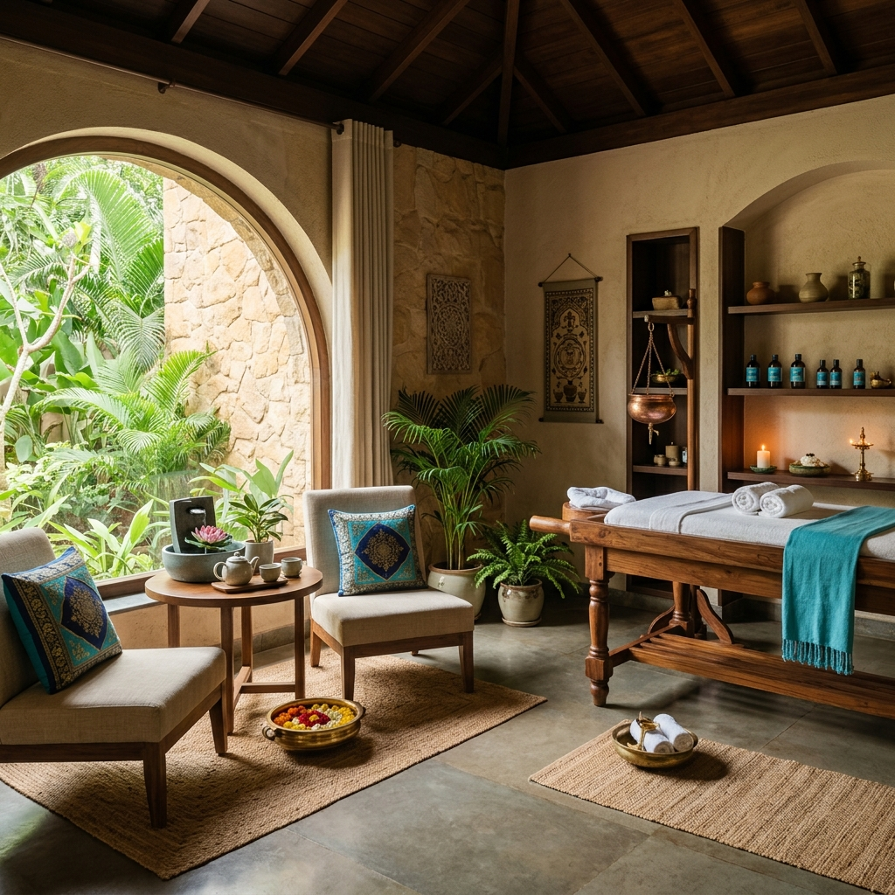

Best Garbh Sanskar & Ayurvedic Clinic in Ahmedabad
Experience authentic Ayurveda and the ancient science of Garbh Sanskar. From complete holistic healing for your family to nurturing your baby in the womb, we provide a platform for absolute wellness.
0+
Years of Experience
0+
Happy Families
0%
Holistic Approach
0+
Expert Workshops
A Sanctuary for You and Your Family
Ved Garbh Sanskar is a unique center providing authentic Ayurvedic treatments for various ailments along with complete Antenatal care. We offer pregnancy activities like Yog, Pranayam, Meditation with Garbhsamvad, Music listening, library facility and Garbh ki Pathshala.
Our Ayurvedic clinic provides personalized, natural solutions for gynecological disorders, infertility, and general wellness, ensuring a disease-free, healthy life for you and your future generations.

Premium Wellness Services
Curated programs designed to embrace and elevate every stage of your motherhood journey.
Garbh Sanskar
Ancient Ayurvedic rituals and guidance to nurture your baby's physical, mental, and spiritual development.
Learn more →Pregnancy Yoga
Gentle, expert-led yoga sessions to strengthen the body, relieve discomfort, and prepare for birth.
Learn more →Special Music for Pregnancy
Music has a powerful and positive influence on both the pregnant mother and the unborn baby.
Learn more →Ayurvedic Consultation
Authentic, natural treatments for gynecological disorders, infertility, and general wellness.
Learn more →Why Bal Chanakya?
Yoga and mindfulness have been shown to improve both physical and mental health in young and school-age children.
Physical Flexibility
Enhances balance, strength, and overall physical development through tailored yoga poses.
Mental Concentration
Improves focus, memory, and cognitive skills through specialized mindfulness activities.
Emotional Wellness
Builds confidence, reduces anxiety, and fosters a positive mindset from a young age.
A Path of Care
We are with you at every precious milestone.
Pre-Conception
Ayurvedic detox, diet planning, and spiritual preparation for welcoming a soul.
Pregnancy (1st to 3rd Trimester)
Month-by-month Garbh Sanskar practices, yoga, mantra chanting, and nutritional support.
Postnatal Care (Bal Chanakya)
Recovery therapies for mothers and early brain development practices for newborns.
Dr. Daxa M Patel
Graduate from Gulabkuverba Ayurvedic College
Dr. Daxa M Patel has been practising Ayurveda since 1997. She deals with all the cases with totally ayurvedic medicines and has been getting very successful results.
This is a first unique Garbh sanskar center in Ahmedabad, Gujarat providing authentic ayurvedic Antenatal care and also Activities at one place with the humble guidence & observation of Ayurvedic doctors.
Read Full ProfileStories of Serenity
Frequently Asked Questions
What exactly is Garbh Sanskar?
Garbh Sanskar is an ancient Ayurvedic practice that involves educating and nurturing the unborn child through the mother's thoughts, diet, environment, and specific rituals.
When is the best time to start?
You can begin our programs during pre-conception or at any stage of your pregnancy. However, starting in the first trimester allows for maximum benefit.
Do I need prior yoga experience?
Not at all. Our pregnancy yoga sessions are designed for all levels and are specifically tailored to be safe and gentle for expecting mothers.
Watch Our Educational Videos
Subscribe to our YouTube channel for guided sessions, expert advice, and inspiring stories from Dr. Daxa Patel.
Ready to embrace a holistic pregnancy?
Schedule a personal consultation with our experts to design a wellness journey tailored to you.